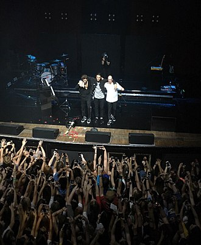

LANY (an acronym for "Los Angeles New York") is an American pop rock band from Los Angeles. Formed in Nashville in 2014, the band consists of Paul Jason Klein and Jake Clifford Goss. Signed to Polydor and Interscope Records, the band have released three top 40 albums: LANY (2017), Malibu Nights (2018), and Mama's Boy (2020). Additionally, they have released a slew of singles, their most successful being the RIAA-certified "ILYSB" (2015), the Julia Michaels collaboration "Okay" (2019), and "Mean It" (2019) with Lauv. In 2020, they released their third studio album Mama's Boy, which was followed by their fourth album, gg bb xx, in September 2021. 